How to use SpatialSablefishAssessment in a MSE
Using the current Sablefish assessment model, but with simplified observations, we demonstrate some R code that can be used to run an MSE. The following R-code manually steps through a few assessment cycles which could be wrapped in a loop.
#'
#' Demonstrate MSE functionality
#'
library(ggplot2)
library(SpatialSablefishAssessment)
library(dplyr)
library(tidyr)
## The code line below will import three objects
## 'data', 'parameters' and 'region_key' These are
## objects that were based on the Sablefish 2021 assessment
load(system.file("testdata", "MockAssessmentModel.RData",package="SpatialSablefishAssessment"))
head(names(data))## [1] "ages" "years" "length_bins"
## [4] "n_regions" "n_projections_years" "do_projection"head(names(parameters))## [1] "ln_mean_rec" "ln_rec_dev" "ln_init_rec_dev" "ln_ll_F_avg"
## [5] "ln_ll_F_devs" "ln_trwl_F_avg"## simplify inputs from the Sablefish assessment for demonstration purposes
## Only one LL survey
## with constant selectivity and Q
fishery_obs_years = 1990:2022
survey_years = 1978:2022
n_projyears = length(data$years) + data$n_projections_years
n_ages = length(data$ages)
n_lgths = length(data$length_bins)
## specify single q and single logistic selectivity for
## survey, LL fishery and Trawl fishery
data$srv_dom_ll_q_by_year_indicator = rep(0, n_projyears)
data$srv_dom_ll_sel_by_year_indicator = rep(0, n_projyears)
data$srv_dom_ll_sel_type = c(0)
data$ll_sel_by_year_indicator = rep(0, n_projyears)
data$ll_cpue_q_by_year_indicator = rep(0, n_projyears)
data$ll_sel_type = c(0)
data$trwl_sel_by_year_indicator = rep(0, n_projyears)
data$trwl_sel_type = c(0)
## specify survey observation containers
data$srv_dom_ll_bio_indicator = as.numeric(data$years %in% survey_years)
data$srv_dom_ll_lgth_indicator = as.numeric(data$years %in% survey_years)
data$srv_dom_ll_age_indicator = as.numeric(data$years %in% survey_years)
data$srv_dom_ll_bio_likelihood = 1 # this changes the intepretation of input Standard errors
data$obs_dom_ll_bio = rep(1, sum(data$srv_dom_ll_bio_indicator))
data$se_dom_ll_bio = rep(0.07, sum(data$srv_dom_ll_bio_indicator))
data$obs_srv_dom_ll_lgth_m = data$obs_srv_dom_ll_lgth_f = matrix(5, nrow = n_lgths, ncol = sum(data$srv_dom_ll_lgth_indicator))
data$obs_srv_dom_ll_age = matrix(5, nrow = n_ages, ncol = sum(data$srv_dom_ll_age_indicator))
# sample size for comp is 5 * n_ages = 150
## specify LL fishery observatiosn
data$ll_cpue_indicator = rep(0, n_projyears)
data$ll_catchatage_indicator = as.numeric(data$years %in% fishery_obs_years)
data$ll_catchatlgth_indicator = as.numeric(data$years %in% fishery_obs_years)
data$obs_ll_catchatlgth_f = data$obs_ll_catchatlgth_m = matrix(5, nrow = n_lgths, ncol = sum(data$ll_catchatlgth_indicator))
data$obs_ll_catchatage = matrix(5, nrow = n_ages, ncol = sum(data$ll_catchatage_indicator))
## specify Trawl fishery observatiosn
data$trwl_catchatlgth_indicator = as.numeric(data$years %in% fishery_obs_years)
data$obs_trwl_catchatlgth_m = data$obs_trwl_catchatlgth_f = matrix(5, nrow = n_lgths, ncol = sum(data$trwl_catchatlgth_indicator))
## turn off all other observations and don't estimate their selectivities
data$srv_jap_ll_bio_indicator = rep(0, n_projyears)
data$srv_nmfs_trwl_bio_indicator = rep(0, n_projyears)
data$srv_jap_fishery_ll_bio_indicator = rep(0, n_projyears)
data$srv_jap_ll_age_indicator = rep(0, n_projyears)
data$srv_jap_ll_lgth_indicator = rep(0, n_projyears)
data$srv_jap_fishery_ll_lgth_indicator = rep(0, n_projyears)
data$srv_nmfs_trwl_age_indicator = rep(0, n_projyears)
data$srv_nmfs_trwl_lgth_indicator = rep(0, n_projyears)
data$loglik_wgt_ll_catch = 50
data$loglik_wgt_trwl_catch = 50
data$loglik_wgt_ll_catchatage = 1
data$loglik_wgt_ll_catchatlgth_f = 1
data$loglik_wgt_ll_catchatlgth_m = 1
data$loglik_wgt_srv_dom_ll_age = 1
data$loglik_wgt_srv_dom_ll_lgth_m = 1
data$loglik_wgt_srv_dom_ll_lgth_f = 1
data$loglik_wgt_trwl_catchatlgth_f = 1
data$loglik_wgt_trwl_catchatlgth_m = 1
## re set the parameters and turn some of them off
parameters$ln_trwl_sel_pars = array(parameters$ln_ll_sel_pars[2,,], dim = c(1,2,2))
parameters$ln_trwl_sel_pars[1,1,1] = log(3)# male a50
parameters$ln_trwl_sel_pars[1,2,1] = log(1.57)# male delta
parameters$ln_trwl_sel_pars[1,1,2] = log(3.7)# female a50
parameters$ln_trwl_sel_pars[1,2,2] = log(1.87)# female delta
parameters$ln_ll_sel_pars = array(parameters$ln_ll_sel_pars[1,,], dim = c(1,2,2))
parameters$ln_ll_sel_pars[1,1,1] = log(4)# male a50
parameters$ln_ll_sel_pars[1,2,1] = log(1.77)# male delta
parameters$ln_ll_sel_pars[1,1,2] = log(5.3)# female a50
parameters$ln_ll_sel_pars[1,2,2] = log(1.27)# female delta
parameters$ln_srv_dom_ll_sel_pars = array(parameters$ln_srv_dom_ll_sel_pars[1,,], dim = c(1,2,2))
parameters$ln_srv_dom_ll_sel_pars[1,1,1] = log(4)# male a50
parameters$ln_srv_dom_ll_sel_pars[1,2,1] = log(1.77)# male delta
parameters$ln_srv_dom_ll_sel_pars[1,1,2] = log(5.3)# female a50
parameters$ln_srv_dom_ll_sel_pars[1,2,2] = log(1.27)# female delta
parameters$ln_srv_dom_ll_q = parameters$ln_srv_dom_ll_q[1]
parameters$ln_ll_cpue_q = parameters$ln_ll_cpue_q[1]
## set init-devs to equilibrium i.e., age-structure at year 1 is assumed to be unfished
parameters$ln_init_rec_dev = rep(-0.5*data$sigma_R^2, data$n_init_rec_devs)
## Only estimate some of the models parameters
estimated_pars = c("ln_mean_rec","ln_rec_dev","ln_ll_F_avg", "ln_ll_F_devs","ln_trwl_F_avg","ln_trwl_F_devs",
"ln_ll_sel_pars","ln_trwl_sel_pars","ln_srv_dom_ll_sel_pars", "ln_srv_dom_ll_q")
na_map = fix_pars(par_list = parameters, pars_to_exclude = unique(names(parameters))[!unique(names(parameters)) %in% estimated_pars])
## Don't worry that the below code fails.
## Because I have turned off a lot of observations it will complain that observation
## input containers are not == 0, but they can't be zero so just ignore for now
## this function only makes sense when you are including all the observations.
validate_input_data_and_parameters(data, parameters)## [1] "mu_cpue_q: different number of elements. Vector had 3 we expected 1. this is the length of 'ln_ll_cpue_q'"## build OM to simulate data over the historic period
OM <- TMB::MakeADFun(data = data,
parameters = parameters,
map = na_map,
DLL = "SpatialSablefishAssessment_TMBExports", silent = T)
first_sim_data = OM$simulate(complete = T)
first_sim_data = convert_simdata_integers(first_sim_data, data)
## visualize some of the input assumptions
plot_input_observations(data = first_sim_data)plot_input_catches(data = first_sim_data)plot_input_timeblocks(data = first_sim_data)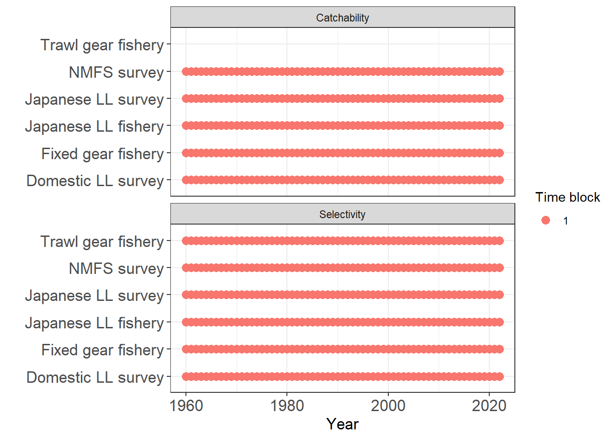
plot_comp_sample_size(MLE_report = first_sim_data, data = first_sim_data) + ylim(0, NA)plot_age_error_matrix(data, F)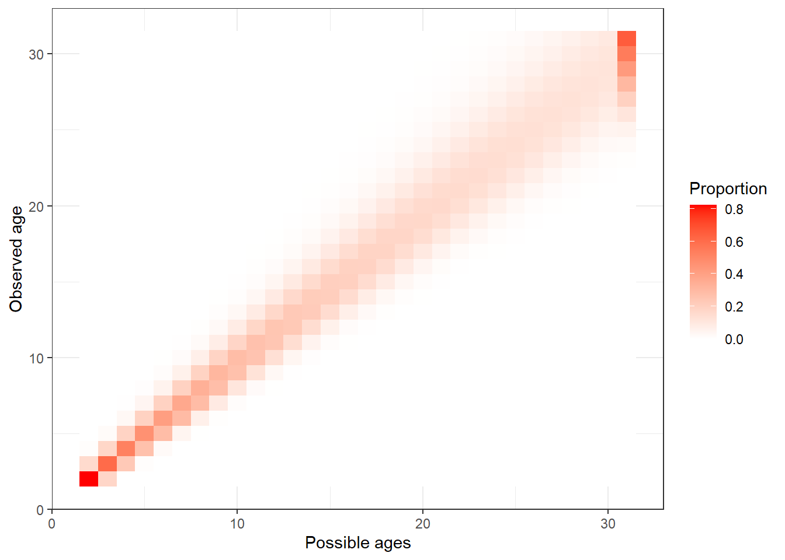
# build an OM with the sim data
# useful to compare negative log likelihoods
# with EM's if any thing goes awry
OM_for_report <- TMB::MakeADFun(data = first_sim_data,
parameters = parameters,
map = na_map,
DLL = "SpatialSablefishAssessment_TMBExports", silent = T)
OM_report = OM_for_report$report()
# have a quick look at AF fits
plot_AF(OM_report, observation = "srv_dom_ll")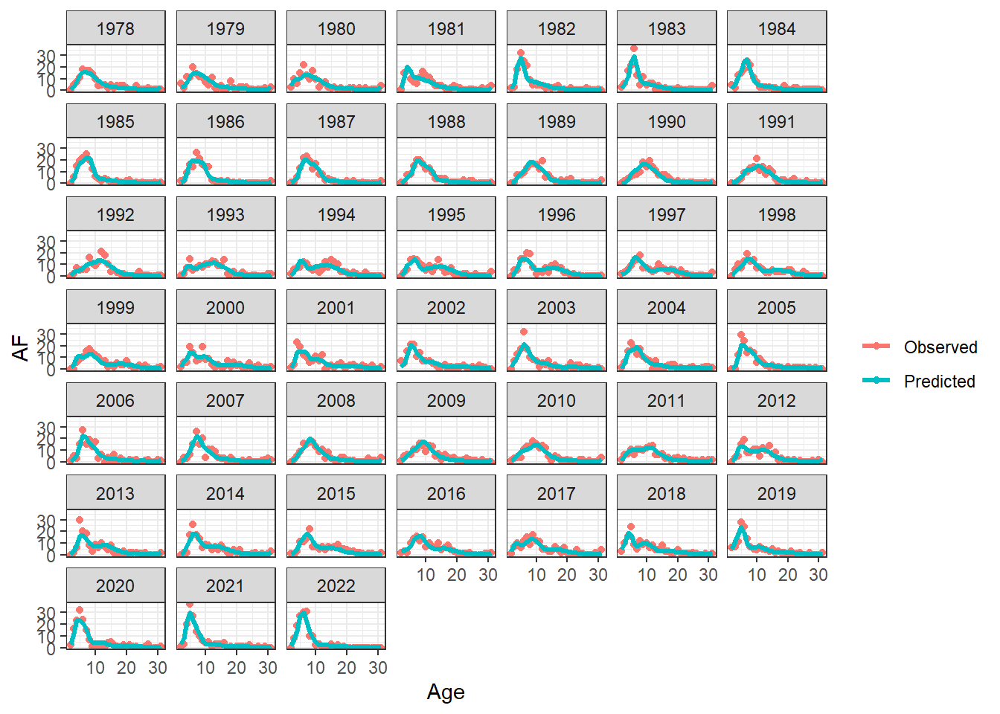
plot_AF(OM_report, observation = "fixed_gear")## back estimate the parameters
## Build EM
## we are cheating by starting at the OM parameter
## values. Should be explored in future investigations
EM <- TMB::MakeADFun(data = first_sim_data,
parameters = parameters,
map = na_map,
DLL = "SpatialSablefishAssessment_TMBExports", silent = T)
unique(names(EM$par))## [1] "ln_mean_rec" "ln_rec_dev" "ln_ll_sel_pars"
## [4] "ln_trwl_sel_pars" "ln_ll_F_avg" "ln_ll_F_devs"
## [7] "ln_trwl_F_avg" "ln_trwl_F_devs" "ln_srv_dom_ll_q"
## [10] "ln_srv_dom_ll_sel_pars"## estimate
first_MLE = nlminb(start = EM$par, objective = EM$fn, gradient = EM$gr, control = list(eval.max = 1000, iter.max = 1000))
# check parameter with largest gradient after initial optimization
cat(" par ", names(EM$par)[which.max(EM$gr())], " had largest gradient = ", EM$gr()[which.max(EM$gr())], "\n")## par ln_mean_rec had largest gradient = 0.01585097## do an additional two Newton Raphson iterations to try and improve the fit.
## this will also check that the Hessian is well defined because it is needed
## to do the Newton Raphson iterations
try_improve = tryCatch(expr =
for(i in 1:2) {
g = as.numeric(EM$gr(first_MLE$par))
h = optimHess(first_MLE$par, fn = EM$fn, gr = EM$gr)
first_MLE$par = first_MLE$par - solve(h,g)
first_MLE$objective = EM$fn(first_MLE$par)
}
, error = function(e){e}, warning = function(w){w})
if(inherits(try_improve, "error") | inherits(try_improve, "warning")) {
cat("didn't converge!!!\n")
## investigate further
}
## else get derived quantities
mle_report = EM$report(first_MLE$par)
## save in a named list so we can use the get_multiple accessors
mod_lst = list()
mod_lst[["OM"]] = OM_report
mod_lst[["EM"]] = mle_report
## you can skip this part if you want to look at the
## harvest control work
## do a bunch of model comparisons
# get likelihoods
nlls = get_multiple_nlls(mle_ls = mod_lst, run_labels = names(mod_lst))
nll_wider = nlls %>% pivot_wider(id_cols = observations, names_from = label, values_from = negloglike) %>% mutate(diff = abs(OM - EM))
print(nll_wider, n = 24)## # A tibble: 29 x 4
## observations OM EM diff
## <chr> <dbl> <dbl> <dbl>
## 1 fishery-ll-age_comp 14917. 14911. 6.35
## 2 fishery-trwl-male_length_comp 13551. 13549. 2.43
## 3 fishery-trwl-female_length_comp 15183. 15179. 3.76
## 4 srv-Domestic-ll_index 214. 214. 0.437
## 5 srv-Japanese-ll_index 0 0 0
## 6 fishery-ll_index 0 0 0
## 7 srv-Domestic-ll-age_comp 19864. 19848. 16.0
## 8 srv-Domestic-ll-male_length_comp 17912. 17913. 0.818
## 9 srv-Domestic-ll-female_length_comp 20164. 20160. 4.86
## 10 srv-Japanese-ll-age_comp 0 0 0
## 11 srv-Japanese-ll-male_length_comp 0 0 0
## 12 srv-Japanese-ll-female_length_comp 0 0 0
## 13 srv-GOA-trwl-age_comp 0 0 0
## 14 srv-GOA-trwl-male_length_comp 0 0 0
## 15 srv-GOA-trwl-female_length_comp 0 0 0
## 16 fishery-ll-male_length_comp 13085. 13083. 1.50
## 17 fishery-ll-female_length_comp 14916. 14915. 0.997
## 18 srv-GOA-trwl-index 0 0 0
## 19 Historic-Japanese-Fishery-index 0 0 0
## 20 Historic-Japanese-Fishery-length_comp 0 0 0
## 21 fishery-ll-catch_Sum_of_squares 0 0.0095 0.0095
## 22 fishery-trwlcatch_Sum_of_squares 0 0.0118 0.0118
## 23 Recruitment-penalty 27.6 29.0 1.34
## 24 Longline_F_penalty 35.9 36.8 0.838
## # i 5 more rows## plot initial age
init_age = get_multiple_init_nage(mle_ls = mod_lst, run_labels = names(mod_lst))
ggplot(init_age, aes(x = Age, y = Numbers, col = label, linetype = label)) +
geom_line(linewidth = 1.1) +
facet_wrap(~sex) +
theme_bw()## plot SSBs
ssbs = get_multiple_ssbs(mod_lst, run_labels = names(mod_lst), depletion = F)
ggplot(ssbs, aes(x = Year, y = SSB, col = label, linetype = label)) +
geom_line(linewidth = 1.1) +
theme_bw()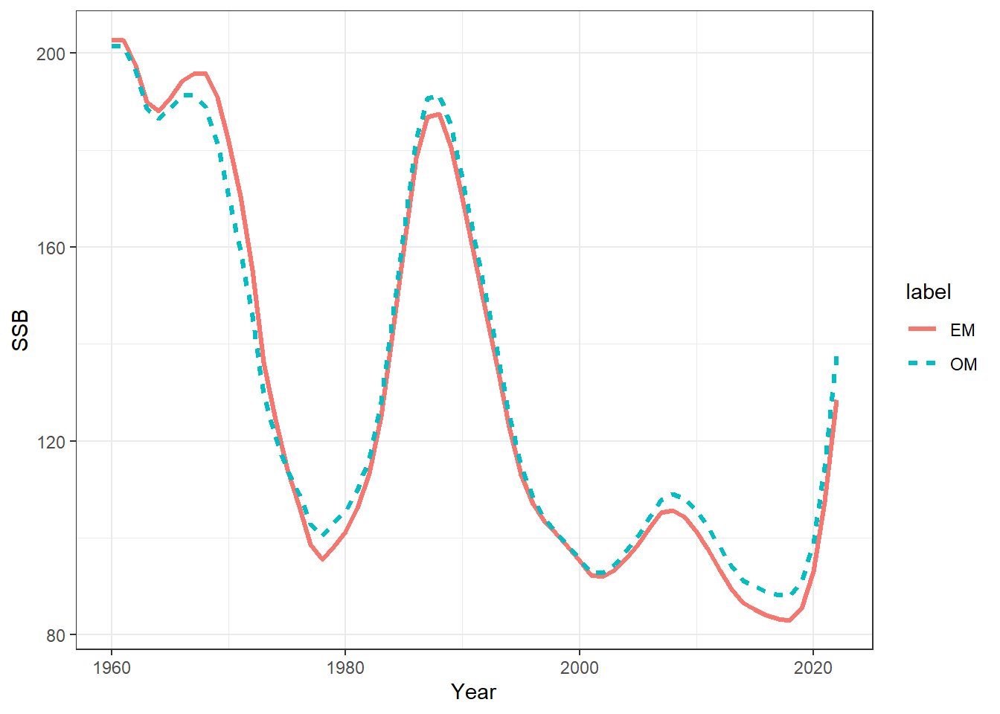
## plot catch
catch = get_multiple_catch_fits(mod_lst, run_labels = names(mod_lst))
ggplot() +
geom_point(data = catch %>% filter(type == "Observed"), aes(x = Year, y = Catch, shape = label), size = 1.6) +
geom_line(data = catch %>% filter(type == "Predicted"), aes(x = Year, y = Catch, col = label, linetype = label), linewidth = 0.9) +
theme_bw() +
facet_wrap(~Fishery)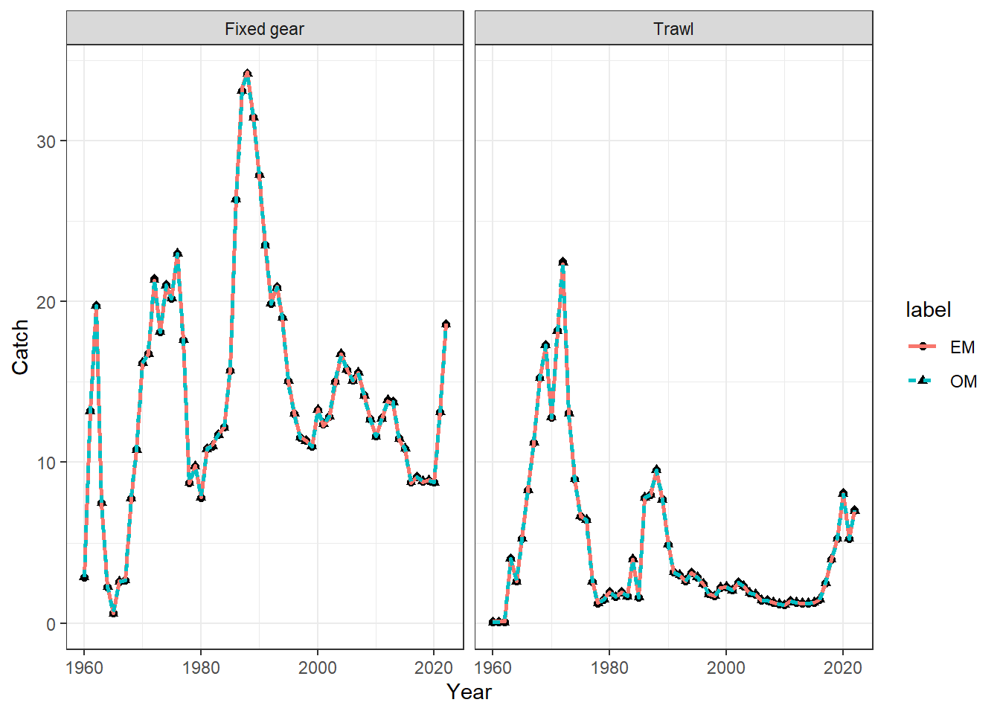
## plot recruitment
recruits = get_multiple_recruits(mod_lst, run_labels = names(mod_lst))
ggplot(recruits, aes(x = Year, y = Recruitment, col = label, linetype = label)) +
geom_line(linewidth = 1.1) +
theme_bw()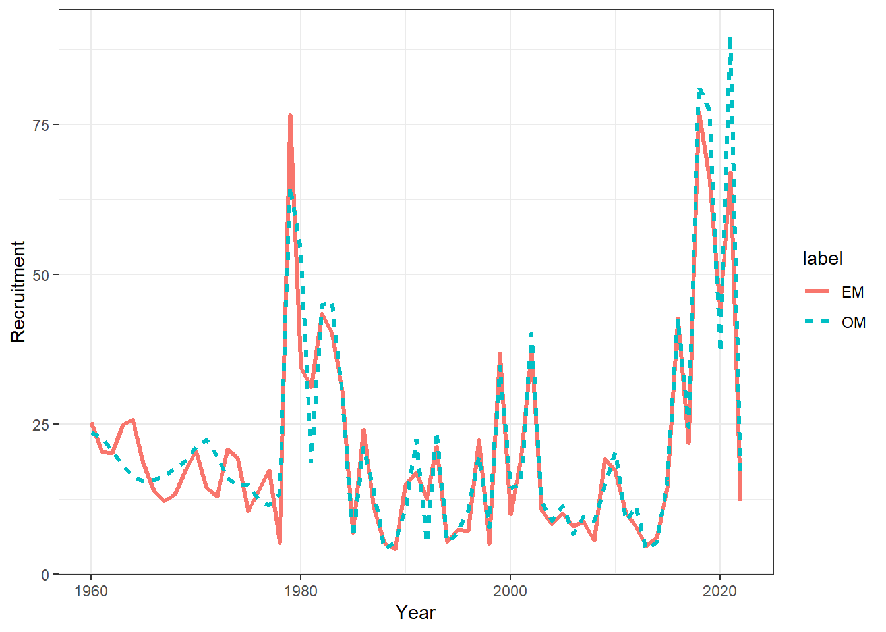
ggplot(recruits, aes(x = Year, y = Recruitment_deviation, col = label, linetype = label)) +
geom_line(linewidth = 1.1) +
theme_bw()## Selectivities
select_df = get_multiple_selectivities(mle_ls = mod_lst, run_labels = names(mod_lst))
ggplot(select_df, aes(x = age, y = value, col = label, linetype = label)) +
geom_line(linewidth = 1.1) +
facet_grid(gear~sex) +
theme_bw()## plot index_fit
index_df = get_multiple_index_fits(mod_lst, run_labels = names(mod_lst))
ggplot(data = index_df, aes(x = Year, y = Pearsons_residuals, col = label, shape = label)) +
geom_point(size= 1.4) +
facet_wrap(~observation) +
theme_bw()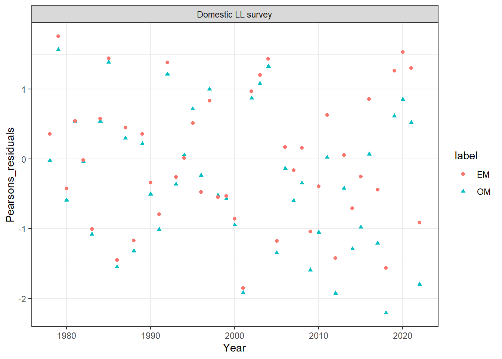
ggplot(data = index_df, aes(x = Year, y = Predicted, col = label, linetype = label)) +
geom_line(linewidth = 1.1) +
facet_wrap(~observation) +
theme_bw()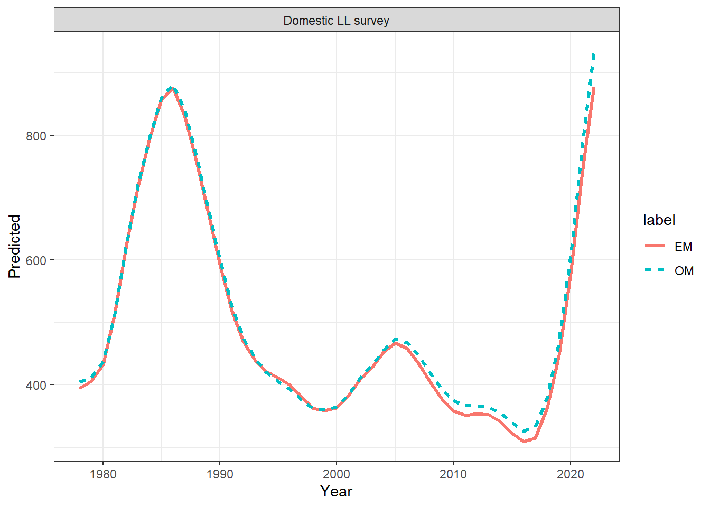
ggplot(data = index_df, aes(x = Year, y = Observed, col = label, linetype = label)) +
geom_line(linewidth = 1.1) +
facet_wrap(~observation) +
theme_bw()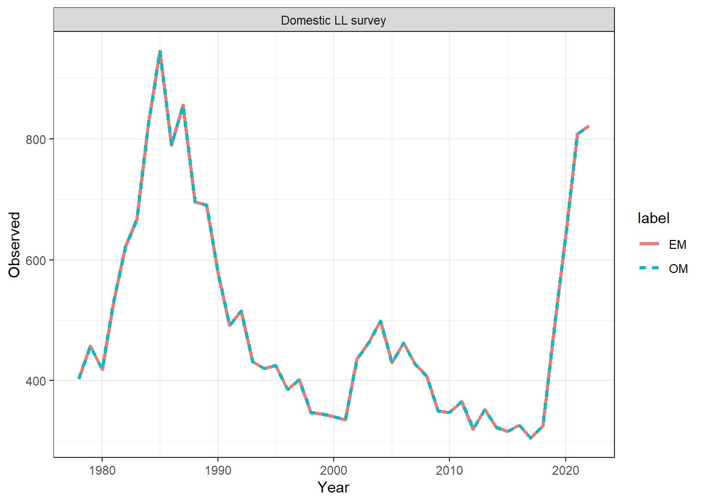
###########################
## Apply a constant F-rule
## Simulate data forward 3 years
## I am going to repeat this twice, but you may want to
## add this into a for loop
## and re-estimate SSB based on F-rule
## This would be an MSE like piece of code
###########################
n_future_years = 3
avg_ll_F_last_5_years = mean(tail(mle_report$annual_F_ll, n = 5))
avg_trwl_F_last_5_years = mean(tail(mle_report$annual_F_trwl, n = 5))
Fmsy = 0.1
## a simple harvest control rule
## if average F in last 5 years is greater than Fmsy
## half the average F for future years
## else set to F-msy
#############
## Step 1 simulate 3 years of future data
## based on HCR
#############
future_ll_Fs = future_trwl_Fs = NULL
if(avg_ll_F_last_5_years > Fmsy) {
future_ll_Fs = rep(avg_ll_F_last_5_years / 2, n_future_years)
} else {
future_ll_Fs = rep(Fmsy, n_future_years)
}
if(avg_trwl_F_last_5_years > Fmsy) {
future_trwl_Fs = rep(avg_trwl_F_last_5_years / 2, n_future_years)
} else {
future_trwl_Fs = rep(Fmsy, n_future_years)
}
# get MLE parameters in list form so we can feed it to MakeADFun
mle_param_list = EM$env$parList(par = first_MLE$par)
new_sim_data = simulate_future_data(data = first_sim_data, parameters = mle_param_list,
n_future_years = n_future_years,
future_ll_Fs = future_ll_Fs, future_trwl_Fs = future_trwl_Fs)
## update na_map we have more F's and rec devs so need to account for that in the map parameter
na_map = fix_pars(par_list = new_sim_data$future_parameters, pars_to_exclude = unique(names(parameters))[!unique(names(parameters)) %in% estimated_pars])
## need to rejig future_data becaue it would have added simulated data for
## observations that we have turned off
future_data = new_sim_data$future_data
new_n_projyears = length(future_data$srv_jap_ll_bio_indicator)
future_data$srv_jap_ll_bio_indicator = rep(0, new_n_projyears)
future_data$srv_nmfs_trwl_bio_indicator = rep(0, new_n_projyears)
future_data$ll_cpue_indicator = rep(0, new_n_projyears)
future_data$srv_jap_fishery_ll_bio_indicator = rep(0, new_n_projyears)
future_data$srv_jap_ll_age_indicator = rep(0, new_n_projyears)
future_data$srv_jap_ll_lgth_indicator = rep(0, new_n_projyears)
future_data$srv_jap_fishery_ll_lgth_indicator = rep(0, new_n_projyears)
future_data$srv_nmfs_trwl_age_indicator = rep(0, new_n_projyears)
future_data$srv_nmfs_trwl_lgth_indicator = rep(0, new_n_projyears)
## Re-estimate
EM_future <- TMB::MakeADFun(data = future_data,
parameters = new_sim_data$future_parameters,
map = na_map,
DLL = "SpatialSablefishAssessment_TMBExports", silent = T)
mle_future = nlminb(start = EM_future$par, objective = EM_future$fn, gradient = EM_future$gr, control = list(eval.max = 1000, iter.max = 1000))
mle_future_report = EM_future$report(mle_future$par)
mod_lst[["EM_future-1"]] = mle_future_report
#############
## Step 2 simulate another 3 years of future data
## on top of the previous 3 years of future data
## based on HCR
#############
## Repeat the Harvest control rule for another 3 years
avg_ll_F_last_5_years = mean(tail(mle_future_report$annual_F_ll, n = 5))
avg_trwl_F_last_5_years = mean(tail(mle_future_report$annual_F_trwl, n = 5))
if(avg_ll_F_last_5_years > Fmsy) {
future_ll_Fs = rep(avg_ll_F_last_5_years / 2, n_future_years)
} else {
future_ll_Fs = rep(Fmsy, n_future_years)
}
if(avg_trwl_F_last_5_years > Fmsy) {
future_trwl_Fs = rep(avg_trwl_F_last_5_years / 2, n_future_years)
} else {
future_trwl_Fs = rep(Fmsy, n_future_years)
}
# get MLE parameters in list form so we can feed it to MakeADFun
mle_param_list = EM_future$env$parList(par = mle_future$par)
new_sim_data = simulate_future_data(data = future_data, parameters = mle_param_list,
n_future_years = n_future_years,
future_ll_Fs = future_ll_Fs, future_trwl_Fs = future_trwl_Fs)
## update na_map we have more F's and rec devs so need to account for that in the map parameter
na_map = fix_pars(par_list = new_sim_data$future_parameters, pars_to_exclude = unique(names(parameters))[!unique(names(parameters)) %in% estimated_pars])
## need to rejig future_data becaue it would have added simulated data for
## observations that we have turned off
future_data = new_sim_data$future_data
new_n_projyears = length(future_data$srv_jap_ll_bio_indicator)
future_data$srv_jap_ll_bio_indicator = rep(0, new_n_projyears)
future_data$srv_nmfs_trwl_bio_indicator = rep(0, new_n_projyears)
future_data$ll_cpue_indicator = rep(0, new_n_projyears)
future_data$srv_jap_fishery_ll_bio_indicator = rep(0, new_n_projyears)
future_data$srv_jap_ll_age_indicator = rep(0, new_n_projyears)
future_data$srv_jap_ll_lgth_indicator = rep(0, new_n_projyears)
future_data$srv_jap_fishery_ll_lgth_indicator = rep(0, new_n_projyears)
future_data$srv_nmfs_trwl_age_indicator = rep(0, new_n_projyears)
future_data$srv_nmfs_trwl_lgth_indicator = rep(0, new_n_projyears)
## Re-estimate
EM_future <- TMB::MakeADFun(data = future_data,
parameters = new_sim_data$future_parameters,
map = na_map,
DLL = "SpatialSablefishAssessment_TMBExports", silent = T)
mle_future = nlminb(start = EM_future$par, objective = EM_future$fn, gradient = EM_future$gr, control = list(eval.max = 1000, iter.max = 1000))
mle_future_report = EM_future$report(mle_future$par)
mod_lst[["EM_future-2"]] = mle_future_report
mod_lst[["OM"]] = new_sim_data$sim_data
######################################
## visually compare the estimated
## SSB through the 2 MSE steps
######################################
## look at ssbs
## plot SSBs
ssbs = get_multiple_ssbs(mod_lst, run_labels = names(mod_lst), depletion = F)
ggplot(ssbs, aes(x = Year, y = SSB, col = label, linetype = label)) +
geom_line(linewidth = 1.1) +
theme_bw() +
xlim(2010, NA)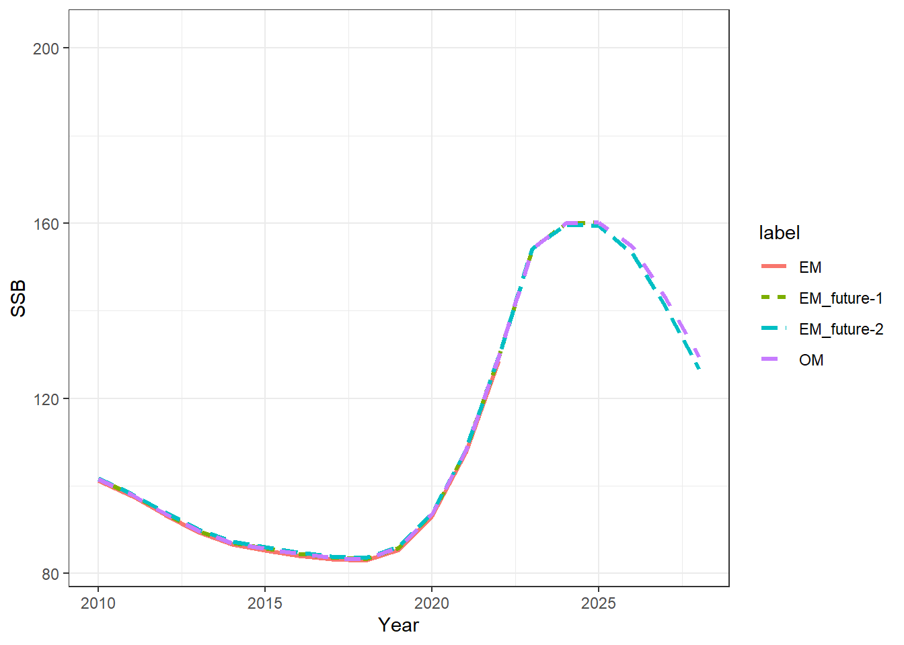
Fs = get_multiple_Fs(mod_lst, run_labels = names(mod_lst))
ggplot(Fs, aes(x = Year, y = F, col = label, linetype = label)) +
geom_line(linewidth = 1.1) +
theme_bw() +
facet_wrap(~Fishery) +
xlim(2010, NA)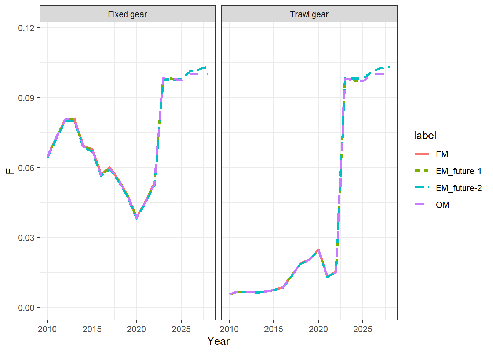